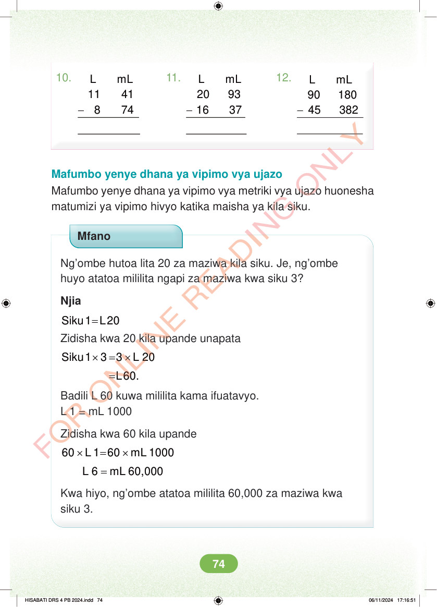

10. 11. 12. - - - L mL 11 41 8 74 L mL 20 93 16 37 L mL 90 180 45 382 Mafumbo yenye dhana ya vipimo vya ujazo Mafumbo yenye dhana ya vipimo vya metriki vya ujazo huonesha matumizi ya vipimo hivyo katika maisha ya kila siku. Mfano Ng’ombe hutoa lita 20 za maziwa kila siku. Je, ng’ombe huyo atatoa mililita ngapi za maziwa kwa siku 3? Njia = Siku 1 L20 Zidisha kwa 20 kila upande unapata × = × Siku 1 3 3 L 20 =L60. Badili L 60 kuwa mililita kama ifuatavyo. L 1 = mL 1000 Zidisha kwa 60 kila upande × = × 60 L 1 60 mL 1000 = L 6 mL 60,000 Kwa hiyo, ng’ombe atatoa mililita 60,000 za maziwa kwa siku 3. HISABATI DRS 4 PB 2024.indd 74 HISABATI DRS 4 PB 2024.indd 74 06/11/2024 17:16:51 06/11/2024 17:16:51